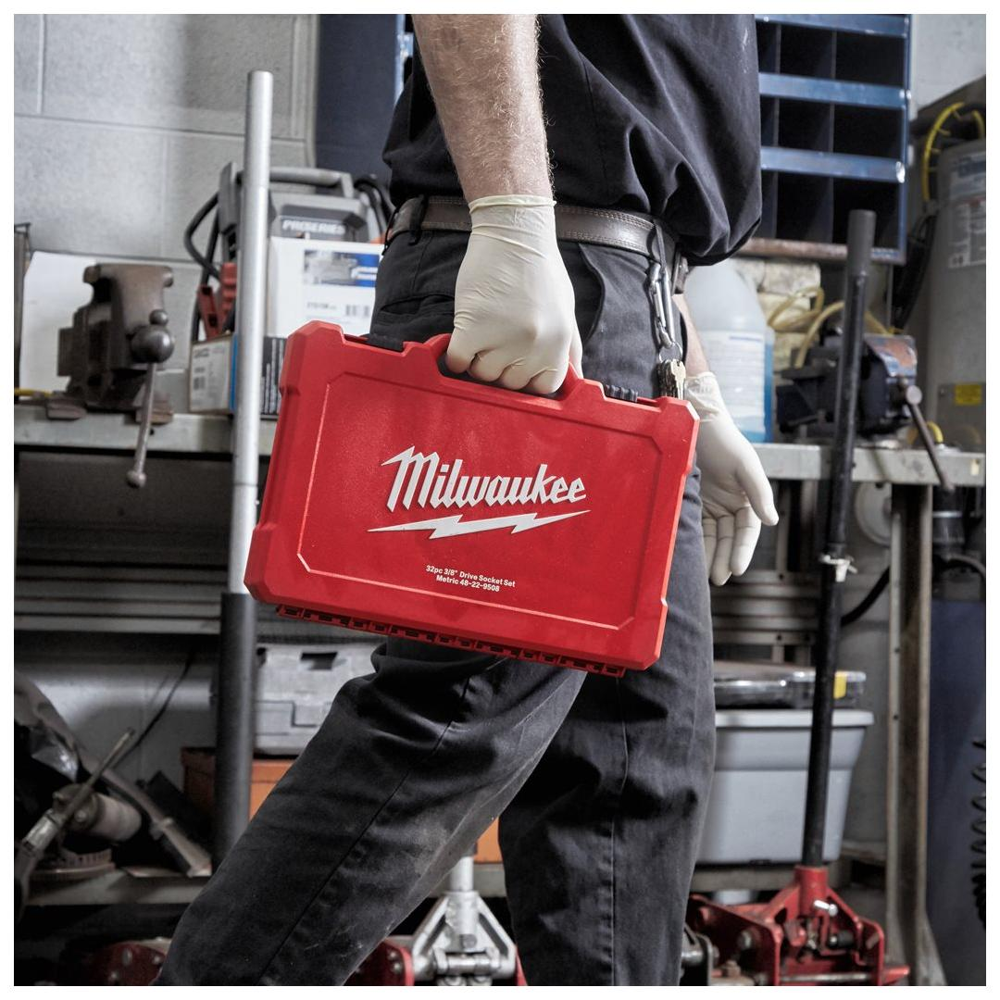
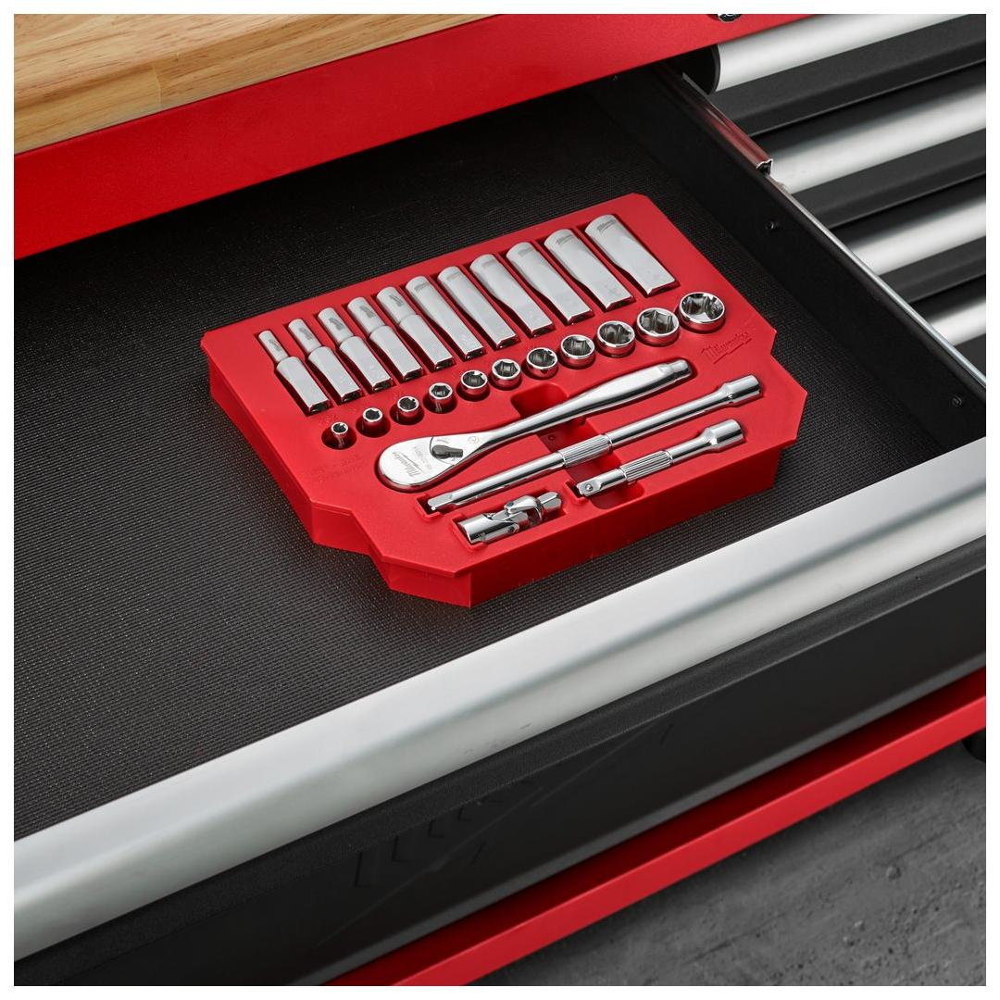
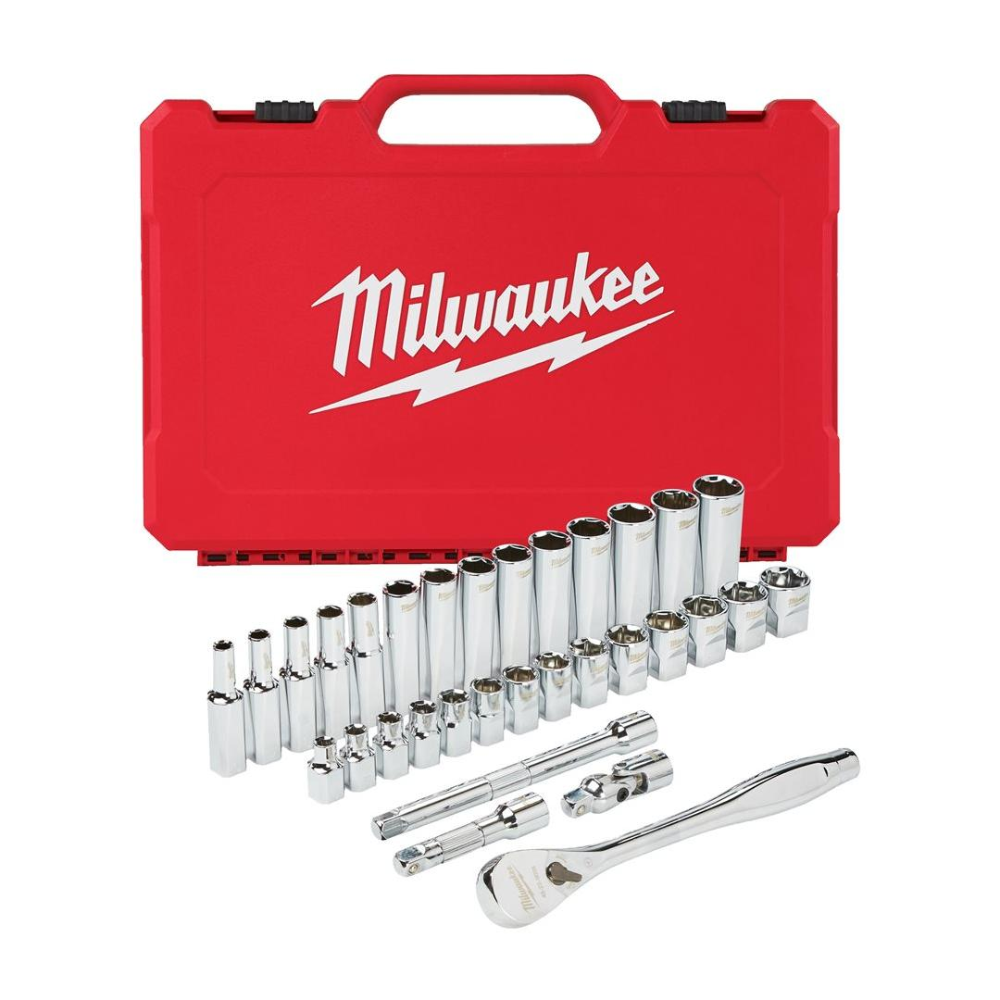
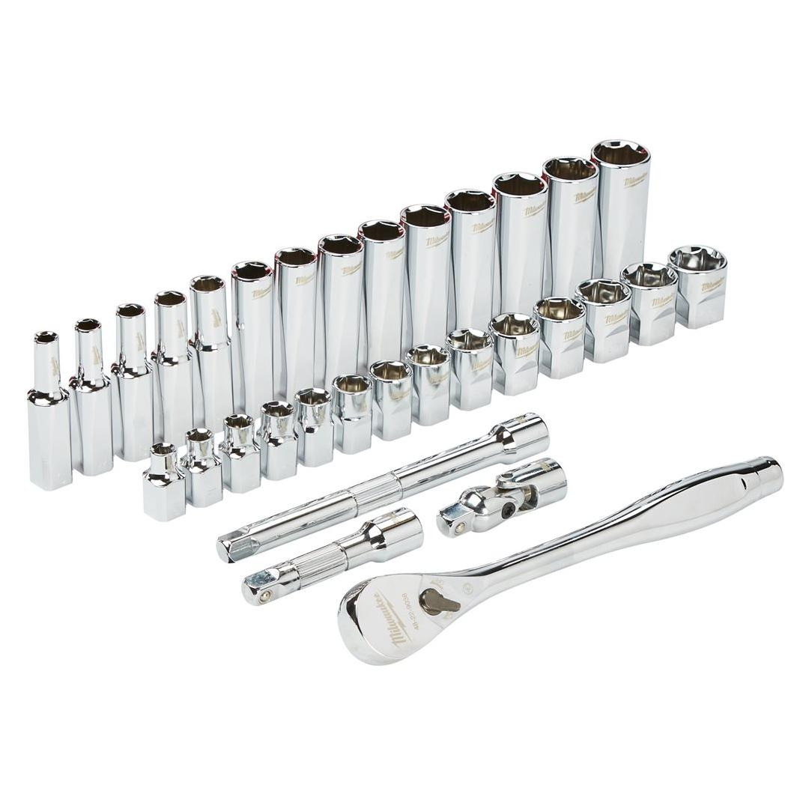
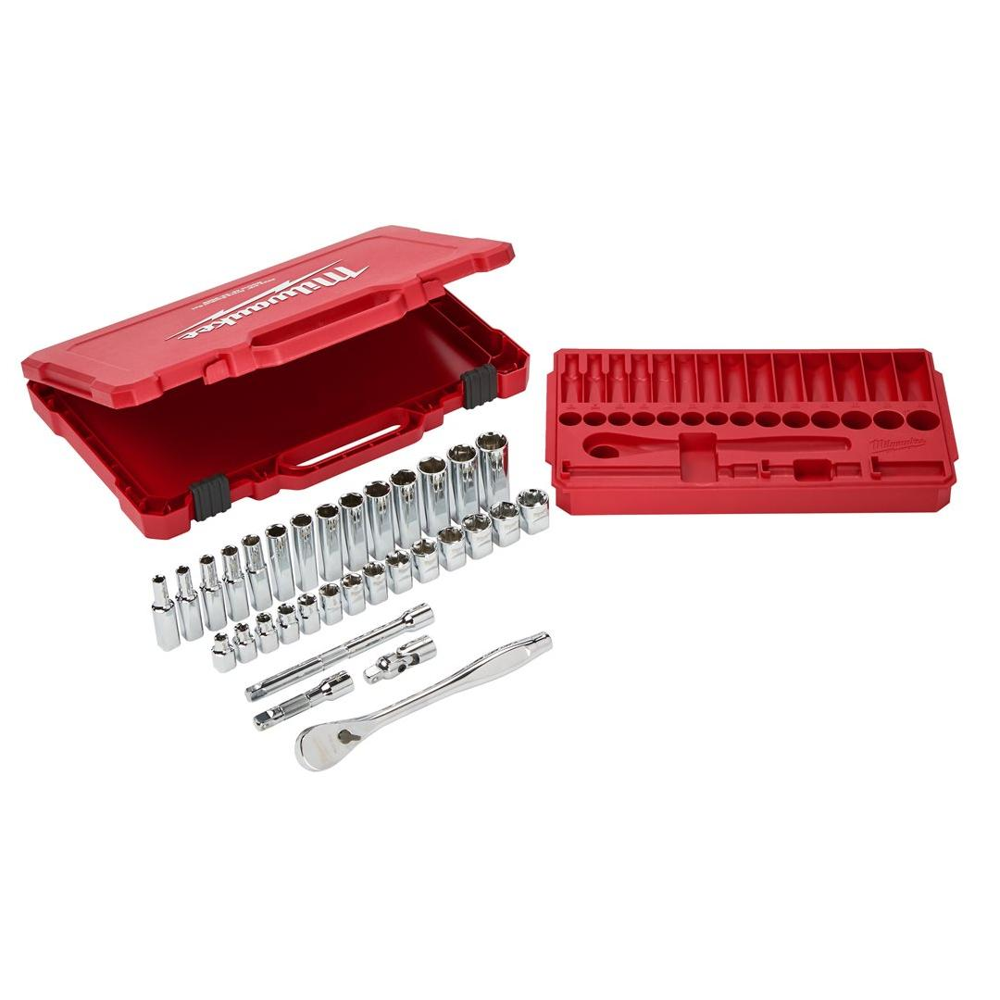
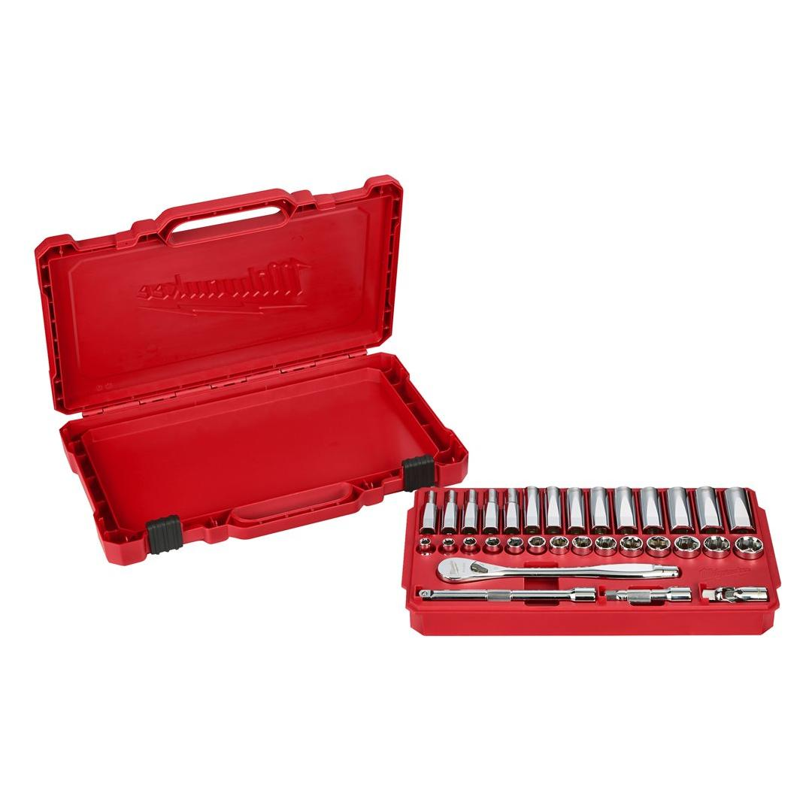

4932464945






| Contents | Standard sockets: 6 mm, 7 mm, 8 mm, 9 mm, 10 mm, 11 mm, 12 mm, 13 mm, 14 mm, 15 mm, 16 mm, 17 mm, 18 mm, 19 mm/ Deep well sockets: 6 mm, 7 mm, 8 mm, 9 mm, 10 mm, 11 mm, 12 mm, 13 mm, 14 mm, 15 mm, 16 mm, 17 mm, 18 mm, 19 mm/ 76 mm extension, 152 mm extension, universal joint |
| Drive Type | ⅜″|¼″|½″ |
| Pack quantity | 32 |
| Profile | HEX |
| Quantity | 1 |
| Set | Single Tool | Set |